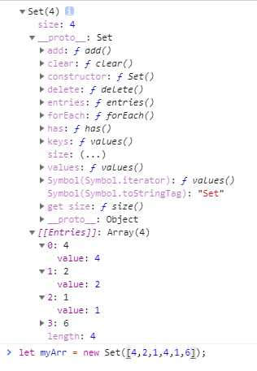
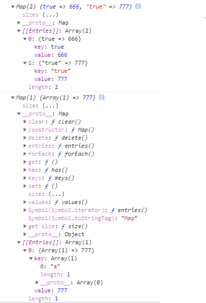

let map1 = new Map();
map1.set(true,666);
map1.set('true',777);
map1.get(true); // 666
let map2 = new Map();
map2.set(['a'],777);
map2.get(['a']); // undefined
console.log(map1);
console.log(map2);
// Set结构：类数组结构，但是成员都是唯一值，没有重复
// 构造函数接受任何具有iterable接口的数据结构
// 判断成员是否相等，使用的算法是"same-value-equality"，类似全等===
// instance property
// constructor 构造函数
// size 返回set实例的成员总数
// instance methods
// add 添加数据，返回set结构本身
// delete 删除某个成员，返回boolean值
// has 判断是否存在某个成员，返回boolean值
// clear 清除所有成员，没有返回值
// keys、values、entries、forEach遍历方法，前三个都是返回成员组成的数组
// let mySet = new Set([4,2,4,1,6,2]);
// undefined
// console.log(mySet[0]);
// 4 2 1 6
// for(let v of mySet.values()){
// console.log(v);
// }
// Map结构：类似对象，也是键值对的集合，但是'键'可以是任何类型的值（包括引用类型--绑定指针地址）
// 如果'键'是基本类型，使用"same-value-equality"算法 判定是否视为一个键
// 如果'键'是引用类型，根据 指针地址 判定是否视为一个键
// instance property
// size
// instance methods
// set、get、has、delete、clear、keys、values、entries、forEach
// let map1 = new Map();
// map1.set(true,666);
// map1.set('true',777);
// map1.get(true); // 666
// let map2 = new Map();
// map2.set(['a'],777);
// map2.get(['a']); // undefined
// console.log(map1);
// console.log(map2);